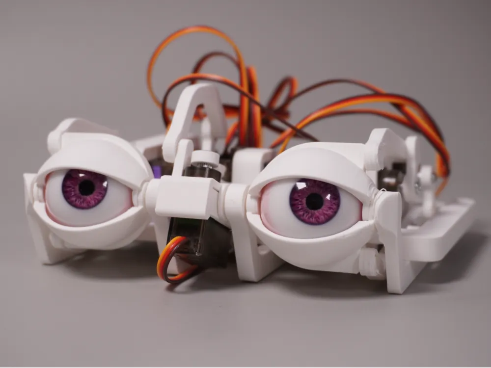
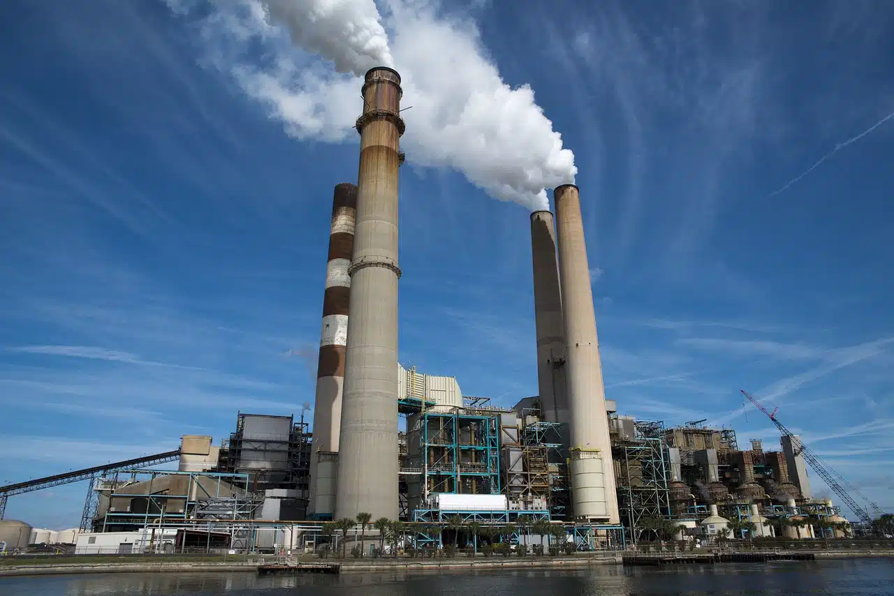

<html>
    <head>
        <meta charset="UTF-8">
        <meta name="viewport" content="width-device-width, initial-scale=1.0">
        <style>
            *{background-color: white;}
        </style>
    </head>
    <body>
        <main>
            <aside>
               <h1>El Futuro del Entretenimiento</h1>
               
               <p>Las maquinas se convierten en la revolucion del entretenimiento, las empresas de comida no son las unicas 
                en usar mascotas mecanizadas para el entretenimiento de los menores, esto gracias a los avances tecnologicos
                actuales que permiten maquinas cuya interaccion con los niños es impresionante, hoy en dia todo negocio usa 
                mascotas, cines, bibliotecas, Incluso escuelas los usan como metodo educativo, ¿Estó bajara la tasa de empleo?
                ¿Qué otros trabajos tomaran?¿De que forma se revelaran? </p>
            </aside>
            <aside>
               <h4>La Era de la IA Comienza</h4>
               <p>Las maquinas son Programadas para todo, ¿ES esté el comienzo de una nueva era?, la clase trabajadora presenta
                quejas constantemente y se sigue insistiendo que las maquinas nunca podran hacer lo que un humano,
                no es nessario recordar que las peliculas siempre predijeron esto. y lo que nos depara el futuro.
               </p>
               
            </aside>
            <aside>
               <h3>Nueva Fabrica Inagurada</h3>
               <p>La inaguracion de la nueva fabrica de animatronicos y mascotas se realizo con la promesa de abrir puestos de 
                trabajo
                 
                con buena paga para cualquiera que pueda realizar el turno nocturno, en cada local donde renten una de las
                mascotas para mantener segura la mercancia, tambien seran contratados apra los locales que compren los robots 
                con la promesa de un pago doble desde el negocio a controlar como la empresa misma, el pago mas generoso sera
                para aquellos que trabajen como guardias en cada sector de la fabrica hasta las 6 o 7 de la mañana</p>
            </aside>
        </main>
    </body>
</html>